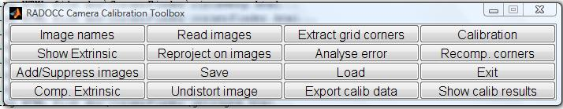
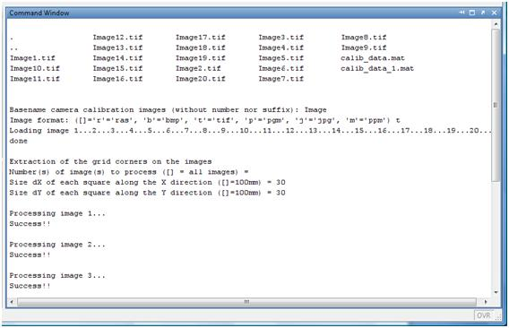
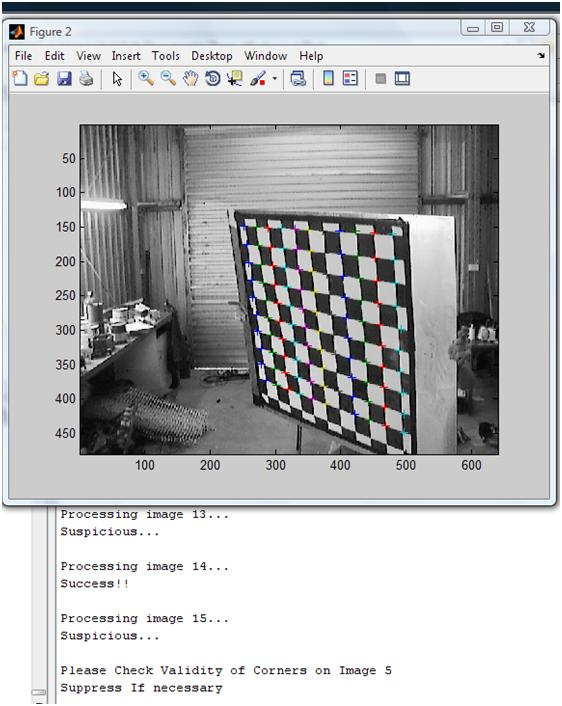

This toolbox represents the Robust Automatic Detection Of Calibration Chessboards (RADOCC) toolbox. The toolbox is a modified version of Bouget's Camera Calibration Toolbox for Matlab. The toolbox appends an automatic corner extraction algorithm to the existing Camera Calibration Toolbox. The algorithm is based on a bachelor of engineering honours thesis [1].
The code of the automatic corner detection algorithm is located in the directory CornerFinder inside the main directory of the toolbox. The main function for the corner detection algorithm is findcorners. The function is called by the calibration toolbox GUI so there is no need to manually call it. Please read the INSTALL and RUN sections below before using the toolbox.
This toolbox has the following requirements:
After unzipping to folder installfolder, add two directories to the Matlab path:
>>addpath('installfolder');
>>addpath('installfolder\CornerFinder'); savepath;
To run the calibration, set the Matlab path to the path containing the image dataset then run calib.
Load the images by pressing Read images and following the prompts.

The following steps of the RADOCC toolbox differ from the original toolbox. Once the images are read, press Extract grid corners. The program will ask you for the image numbers to process. Press enter for all. It will then ask for the dx and dy dimensions of the chessboard squares. Once these are entered, the automatic corner detection program will start running. The corner detector requires about 10 seconds for a 1.3 megapixel image. Therefore, if you have a large dataset, it is advised that you allow enough time for the program to finish.

Once the corner detection is done, the program will ask for the verification of images which may not have been extracted properly. In most cases, the extraction should have gone well. Nevertheless, if it did not, you will have to suppress the image using the ‘Add/Suppress images’ button. Important conditions requiring attention are the colours of the markers. Corners lying on the same row should have the same colour markers (colours are reused).

After the corners are detected, you may now calibrate. Important aspects to notice are:
1. The corner finder algorithm automatically counts the number of corners along each dimension.
2. The size of the grid extracted may differ from an image to another. This should not alter the calibration process.
3. The corner finder returns an appropriate window size for the subpixel finder offered by Bouget's toolbox, this can be changed if necessary.
To calibrate, press the calibrate button. Further steps for improving the calibration results are described in Bouget's documentaion.
References:
1. Kassir, A., Automation of Sensor Calibration for Unmanned Ground Vehicles, B.E. Honours Thesis, 2009.